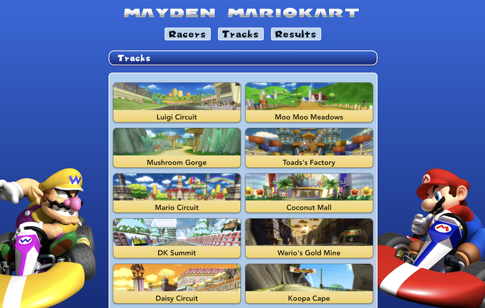
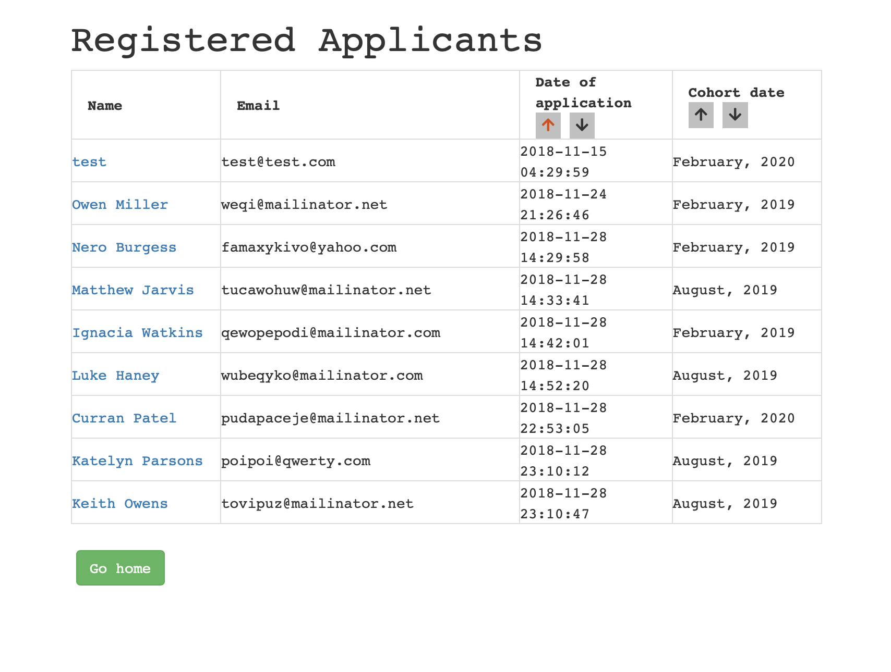
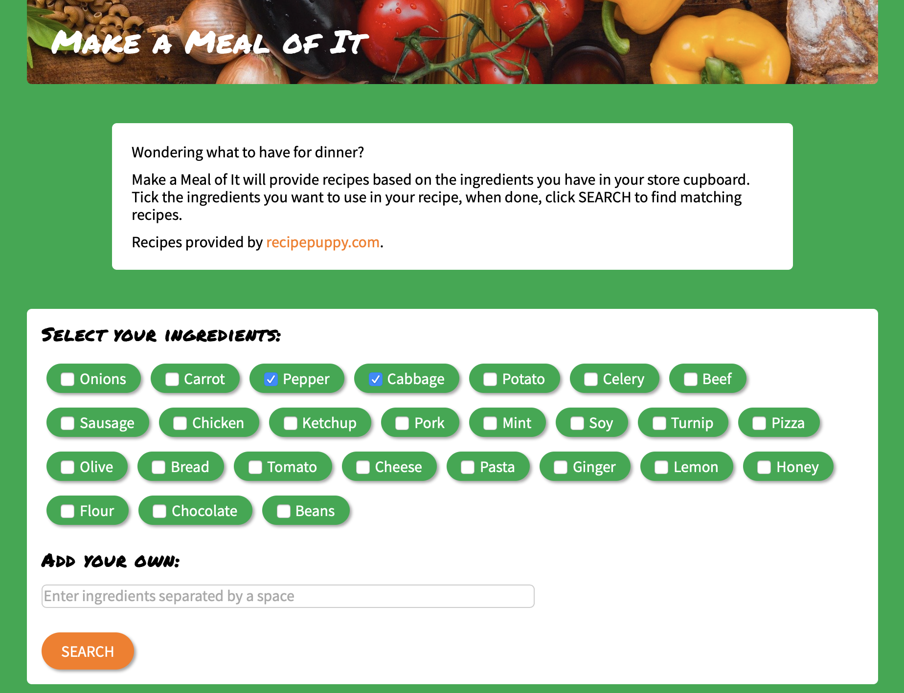
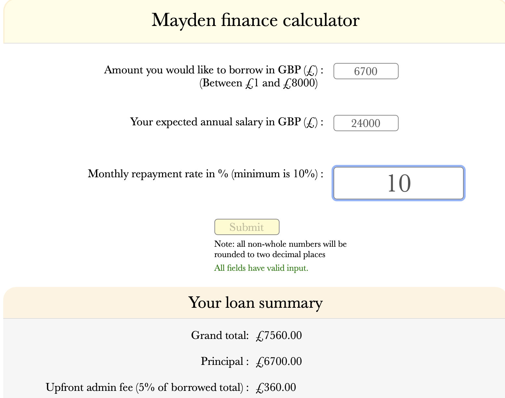
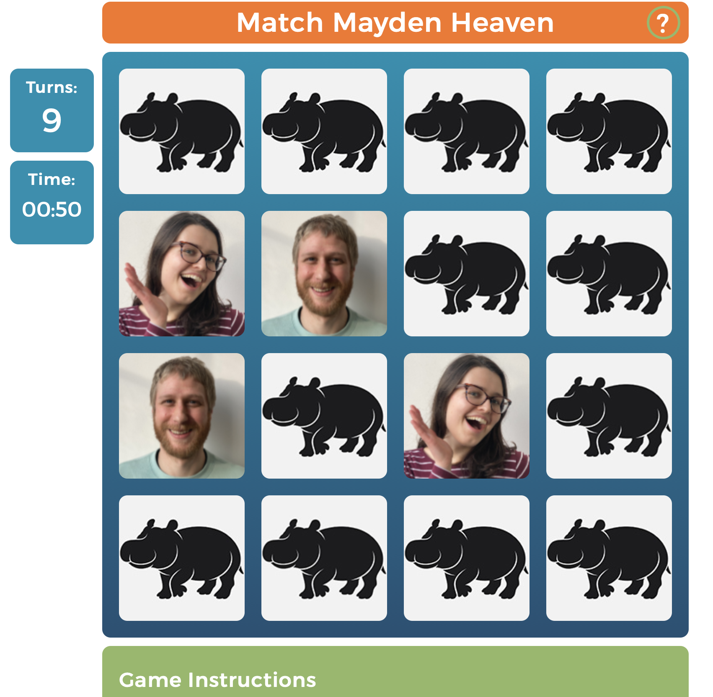

Mario Kart Wii API

An RESTful API for tracking your performance in Mario Kart Wii, developed using node.js and Express. A React front end allows for users to consume the API through a UI inspired by the original game, and permanently store their results in a MongoDB database.
Tech used: #React #node.js #MongoDB #Express
Mayden Academy Portal

Working on an OOP PHP/MySQL/Slim application with a legacy codebase, we deployed new features executed within an MVC design pattern. Back-end functionality was unit- and acceptace-tested, while the user interface was enhanced through the sortable.js library.
Tech used: #PHP #MySQL #Slim #ES6 #sortable.js
Make a Meal of It

An OO app enabling the discovery of recipes based on selected ingredients. PHP connected a local MySQL ingredients DB with a food recipes API. Request/response data were extensively sanitised and validated, and SOLID principles were adhered to throughout.
Tech used: #ES6 #API #SCSS #HTML
Finance Calculator

A TypeScript application, compiled to ES5 via Babel, to calculate student loan payments within a set of user-specified parameters, with results displayed through Handlebars templating. The velocity.js library was utilised for front end animation effects.
Tech used: #TS #JS #SCSS #Babel #Gulp
Match Mayden Heaven

A pairs matching game developed using HTML/CSS/Javascript, as well as jQuery for some of the front-end animations. Following a responsive design, it adapts to mobile device screens, and features input validation to ensure the game operates consistently.
Tech used: #ES6 #HTML #CSS #jQuery